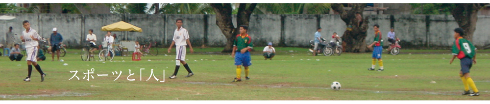

～現在更新中～
アメリカンフットボールにおいて、初めて教えてもらう基本姿勢に「ファンダメンタル・フットボール・ポジション（FFP）」がある。 通称「フットボールスタンス」と呼ばれるこの姿勢は、足を肩幅に開き、中腰になりながら背中をまっすぐに伸ばし、両手は力を抜いてぶらりと前に出す。 まるでゴリラが仁王立ちするような野生的な体制でありながら、目を閉じると禅にも似たような落ち着きが得られる。プレイ開始前の1秒間の静寂を作る自然体を意味する。 このスタンスは、あらゆる方向からの衝撃に対する柔軟な受身を取れる体制と、またその逆にどの方向へも瞬時に攻撃できることが特徴である。 しかし「あらゆる方向」という言葉には例外があり、ヘルメットをかぶる特性上、視界を妨げられる後方からの衝撃には対応できない。
スポーツ界に衝撃が走った日大アメリカンフットボール部の騒動。 反則を犯した日大選手の会見に自然と涙がこみ上げてきた。 私自身も高校生からアメフトに取りつかれ社会人でもプレイをし、同時期に母校のコーチとして指導経験もあったが故のことであろう。もう1つ大きな所以は、わが子達がスポーツに参加することによって人間的に成長をすることを信じて止まない親としての目線であろう。「もし、これが自分の息子だったら」と･･･。 問題となったスポーツ指導者と選手の支配構図の実態において、以前世間を騒がせた相撲協会やレスリング協会のような問題とは全く違う認識がある。それは正に教育現場で起こったスポーツ指導の実態であり、とりわけ大学では高度な競技性を求められ、学生の自主性・積極性にその活動が委ねられているため、人格形成などの教育的指導を欠かすことがあってはならないと考えるからだ。 会見から、様々な立場で様々な思いが頭を巡る。 「指導者のコミュニケーションなくして、何が乖離なのか」 「大学は何を守るのか」 「大学スポーツを行う価値はどこにあるのか」 「教育とは」 是非今回の問題は対岸の火事ではなく様々な視点や立場から当事者意識をもって議論をしていただきたい。 大学スポーツは今後本当の意味で大きな転換期を迎える。一部では商業化へ傾注する日本版NCAAの創設が危惧されているが、大学という教育現場におけるスポーツのあり方を指導者も含め、もう一度再考する必要があるだろう。 日大選手が語った「大好きだったフットボールが、いつしか楽しくなくなっていた」という言葉に多くの方が胸を締めつけられたであろう。 高校時代に無我夢中でブロックを撥ね退け、転倒しても起き上がり、すぐに「フットボールスタンス」に立ち戻る基本練習をしていた自分を思い出していただき、将来何度となく迎うる苦難や障壁を乗越えるためにも、自然体を見つめ直し、もう一度自分自身の「フットボールスタンス」を取り戻してもらいたいと願うばかりである。
現在、更新中
現在、更新中
現在、更新中